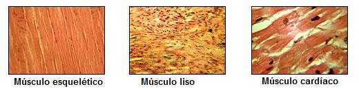

El sistema muscular comprende un entramado de fibras y tejidos musculares esenciales para la movilidad y la firmeza del esqueleto. Su función radica en lograr un equilibrio al estabilizar la postura del cuerpo, generar movimiento, regular el volumen de los órganos internos, facilitar el transporte de sustancias en el organismo y contribuir a la producción de calor. Representa aproximadamente el 40% de la masa corporal total y engloba una asombrosa diversidad de más de 600 músculos.
Se compone de fibras musculares rodeadas por tejido conectivo. El sistema muscular en los seres humanos y la mayoría de los mamíferos superiores está formado por dos elementos clave: los músculos y los tendones. Los músculos tienen la función de contraerse y facilitar el movimiento, algunos de manera voluntaria y otros de forma refleja. Los tendones son robustas bandas de colágeno que conectan los músculos a los huesos, desempeñando un papel fundamental al transmitir la fuerza generada por los músculos a los huesos y evitando así tensiones excesivas que puedan causar desgarros.
Existen tres tipos de tejido muscular:
- Tejido muscular esquelético: Puede describirse como músculo voluntario o estriado. Se denomina voluntario debido a que se contrae de forma voluntaria. Estos músculos están unidos a los huesos y constan de un gran número de fibras musculares.
- Tejido muscular liso: Este describe como visceral o involuntario. No está bajo el control de la voluntad. Se encuentra en las paredes de los vasos sanguíneos y linfáticos, el tubo digestivo, las vías respiratorias, la vejiga, las vías biliares y el útero.
- Tejido muscular cardíaco: Este tipo de músculo estriado que comprende la capa del corazón es conocida como miocardio. No está bajo el control voluntario. Su contracción y distensión es involuntaria y continua. Este ejercicio se realiza unas 100.000 veces por día, por eso son algunas de las fibras musculares más fuertes del cuerpo.

Imagen disponible en Wikimedia Commons
{kind=link}